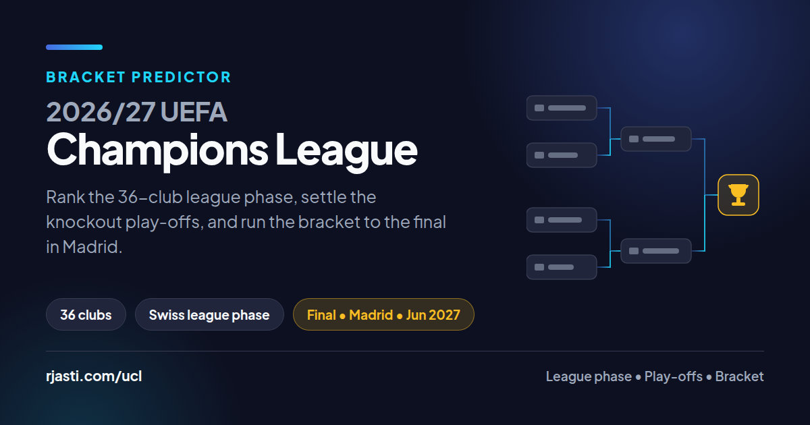
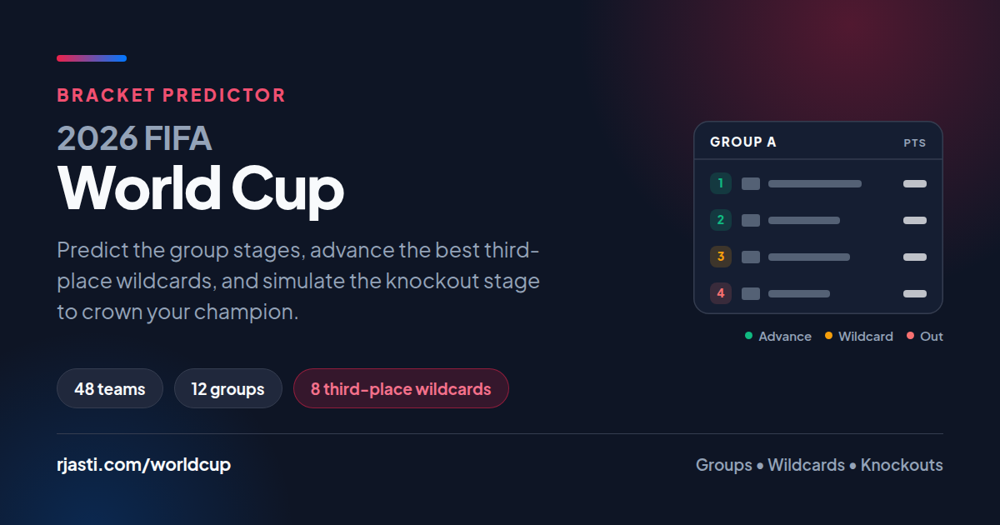
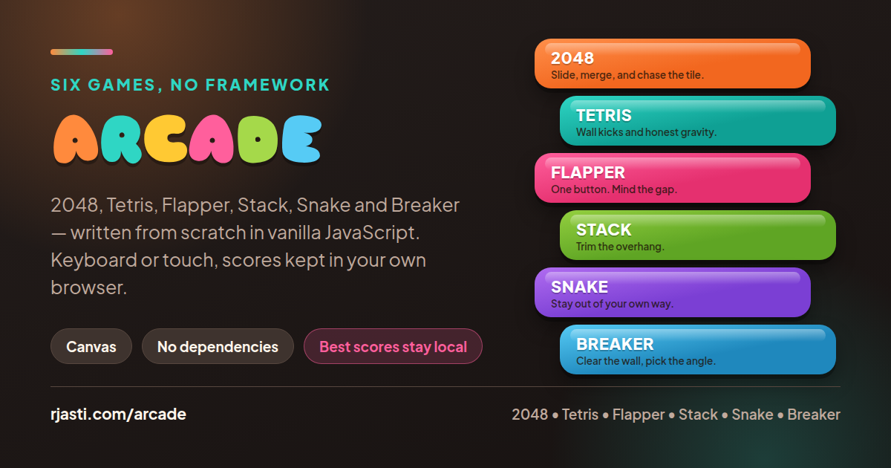
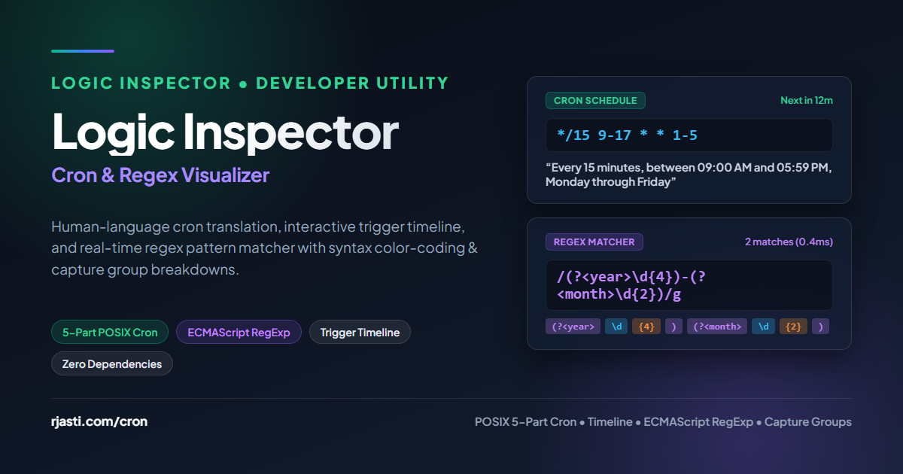
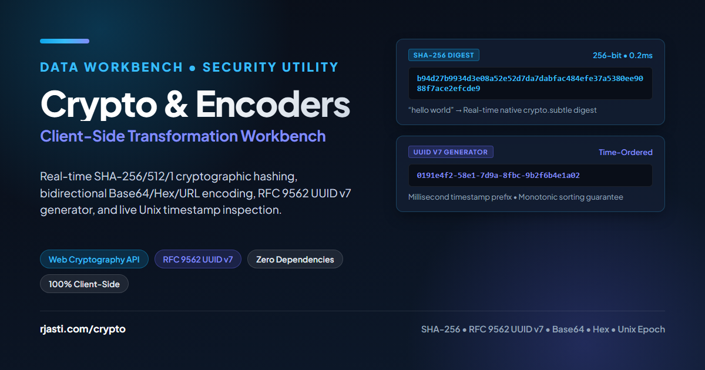
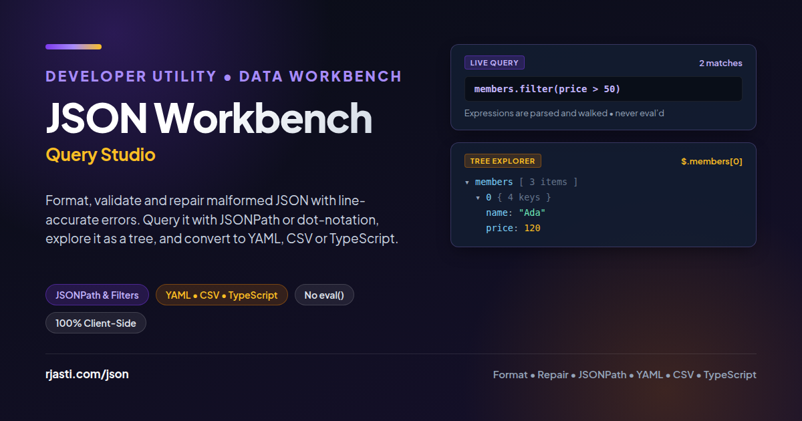
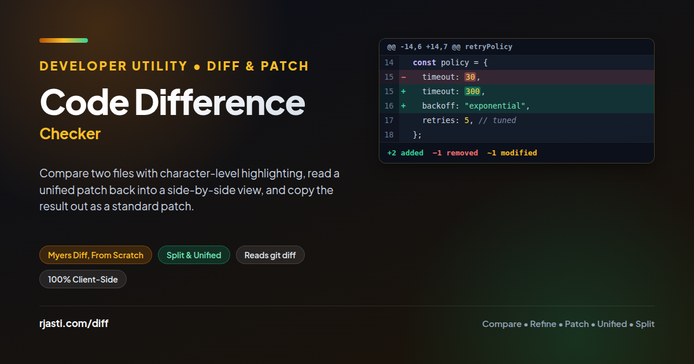

Let's talk.
Have a project in mind or want to connect? Pick whichever way is easiest — email, a social link, or the form on the right.
Not sure how to start? Pick a topic and I'll open the message for you.
Hands-on Data Engineer with 8+ years of experience architecting distributed high-throughput microservices, enterprise OLAP/OLTP databases and Middleware systems. Deep domain expertise in supply chain intelligence (ERP, WMS, TMS), with a proven track record of transforming multi-source operational data into unified, scalable Datawarehouse. Deep technical expertise in database administration and optimizing execution plans, storage, logs, backup strategies, and transaction workloads across SQL Server, PostgreSQL and Redshift.
Track record of architecting scalable data platforms, enterprise OLTP/OLAP systems, backend microservices
What I do when I'm not building data pipelines — four habits that keep the other twelve hours honest.
Avid soccer fan who follows matches closely on weekends, and an active tennis player who loves hitting the court for rallies and competitive sets.
Nothing beats a 20-minute sauna session after a long day of engineering. It is my reset button for recovery and deep thinking.
Lifting heavy and staying mobile. Consistency in the gym translates directly to discipline and focus at the keyboard.
Always on the hunt for the best local eats, from hidden street food gems to trying my hand at cooking new cuisines at home.
Side projects that live on their own pages, away from the portfolio. Pick one — each opens in a new tab.

FootballRank the 36-club league phase, settle the knockout play-offs, then run the bracket through to the final in Madrid. Picks save in your browser and travel as a share link.
Launch
FootballPredict the group stages, advance the best third-place wildcards, and simulate the knockout stage all the way to crowning the champion.
Launch
Games2048, Tetris, Flapper, Stack, Snake and Breaker, written from scratch in vanilla JavaScript — no framework, no game engine, no third-party code. Keyboard or touch, and your best score for each stays in your browser.
Launch
Dev ToolsTranslate 5-part cron schedules into plain English, inspect the next 10 triggers on a live timeline, and match regex patterns in real time with syntax color-coding and capture group breakdowns.
Launch
SecurityReal-time SHA-256/512/1 hashing, bidirectional Base64, Hex, URL, and Binary transformations, RFC 9562 UUID v7 generator, and live Unix timestamp inspection.
Launch
Dev ToolsFormat, validate and repair malformed JSON with line-accurate errors, query it live with JSONPath or dot-notation filters, explore it as a collapsible tree, and convert between JSON, YAML, CSV and TypeScript interfaces.
Launch
Dev ToolsCompare two files with Myers diff and character-level highlighting, switch between split and unified views, paste a git diff and read it back as a side-by-side, and copy the result out as a standard unified patch.
Everything this site has recorded about your visit, as it happens. It stays with your session — no third-party trackers, nothing that follows you off the page.
Have a project in mind or want to connect? Pick whichever way is easiest — email, a social link, or the form on the right.
Not sure how to start? Pick a topic and I'll open the message for you.
Three fields, about a minute.